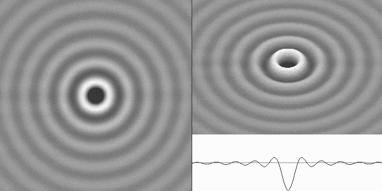
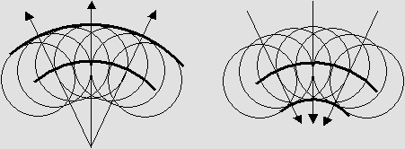
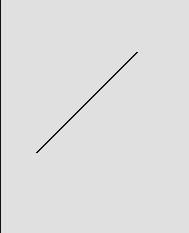
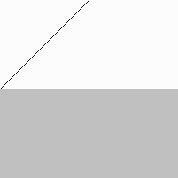
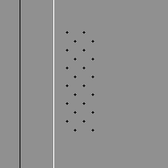
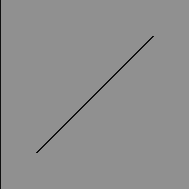
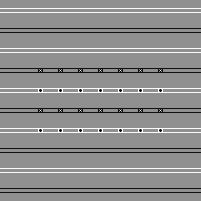
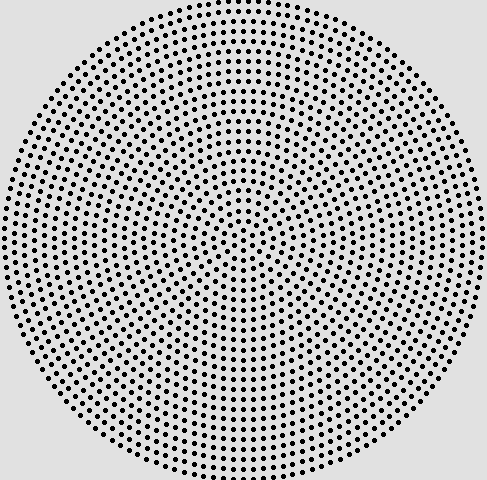
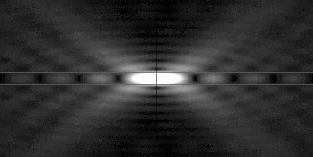
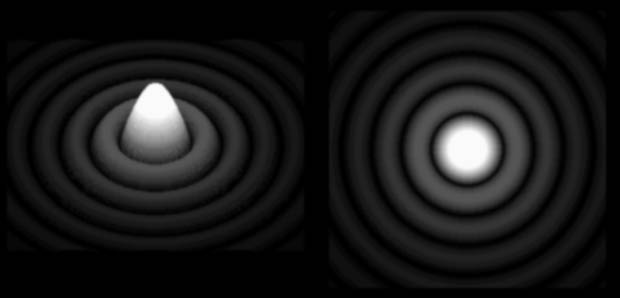

| 00 | 01 | 02 | 03 | 04 | 05 | 06 | 07 | 08 | 09 | 10 | 11| 12 | 13 | 14 | 15 | 16 | 17 | 18 | 19 | 20 | 21 | 22 | 23 | 24 | 25 | 26 | 27 | 28 | 29 | 30 | 31 | 32 | 33 | 34 |
HUYGENS' PRINCIPLE
|
 |
This animated diagram was generated by a FreeBasic program using solely the Huygens Principle.
The pixel gray shade is simply the sum of all Huygens' wavelets incoming from the internal surface of a hemisphere.
It is the equivalent, yet much simpler alternative to Fresnel's differential and integral calculus.
|
We may consider that all the points attained simultaneously by the wave are the centers of wavelets reinforcing on their common envelope: the main wave. The wave energy is only significant there. |
This is a translation of the Huygens Principle from his "Traité de la Lumière" book.

Here, the next wave front is the sum of identical wavelets created on the previous wave front.
However, the wavelet summation yields correct results everywhere on condition that phase is taken into account.
|
A reliable method. The Huygens' Principle is a powerful method for studying optical phenomena. Although we recently demonstrated that Mr. Philippe Delmotte's virtual medium is even better and faster, it is still highly useful because it is amazingly reliable. Actually, I never encountered a situation where it did not hold true. Fresnel's Principle is supposedly more accurate, but I am not well convinced of this because Fresnel abandoned the famous "wavelets". I am of an opinion that the wavelet hypothesis remains highly relevant on condition that the phase is considered. Then the radius of curvature does not need to be equal for all wavelets any more. In addition, this upgraded version clearly shows that a wave cannot transmit energy backward. |

This is how the light is reflected on a mirror for a 45° angle.
The reflection angle is consistent with experiments whatever the mirror angle.
Please note that all wavelets are generating a second wave front across the mirror.
However, on condition that their phase is opposite, this will cancel the incoming wave front and produce a shade.
|
Refraction. The Huygens Principle should also be worded in order to take the wave velocity into account. The speed of light becomes slower after entering a transparent substance such as gas, water or glass. Then the wavelet speed should also be slower, and the result is refraction as shown below. |

This is how the light is deviated on a plane transparent material such as glass.
The light beam is deviated because the wavelet speed is slower inside transparent material.
The reflection is very faint. The wavelet summation is almost zero because they are created inside a rather deep area.
|
Negative wavelets. The original Huygens Principle does not clearly account for the wave direction. The important point is that the wavelet phase must be considered. However, the diagram below shows that additional negative wavelets easily solve this problem. The use of black and white wavelets proves to be preferable. |

Regular traveling waves cannot travel backward.
The wavelets are well separated forward but they cancel backward.
THE PHASE IS OPPOSITE FOR WAVELETS EMITTED BY ELECTRONS
|
It is a well known fact that the light phase is pi shifted when it is reflected on a mirror. It is also the case for radio waves. So the Huygens principle should be modified again in order to obtain such a phase shift. This is especially interesting because the wavelet phase is also shifted behind the mirror. Then the phase as compared to that of the incoming wave front is also shifted and the wavelet addition is zero. I already demonstrated that the light is never stopped by any material body. It goes freely through it, but electrons on its surface are emitting wavelets whose phase is opposite. This is why there is a shade behind objects. It is not because objects are stopping the light. |

The mirror produces a shade because the wavelet phase is opposite behind the mirror.
There is a shade behind any object for the same reason.
|
Standing waves. The black and white wavelet method also solves the standing wave phenomenon: |

Huygens' black and white wavelets also explain standing waves.
However, this demonstration is not very convincing.
Fortunately, the wavelet summation by means of a computer is much more accurate.
THE ALTERNATIVE "INTEGRAL" CALCULUS
|
Huygens could not specify how many wavelets are needed in order to produce accurate results. An infinite number according to Newton's or Leibniz's original differential calculus is obviously unfeasible in the case of a computer program. Samples. Actually, a limited number of wavelet samples (about 1000) most often yield fairly good results, albeit one may occasionally prefer using more in order to be sure. This is not a problem because today's computers are very fast. As soon as the calculus for one wavelet only is correct, the summation for them all is done in seconds. The wavelet calculus. So the first step is to scan pixels in the whole wave area and establish the wave diagram for one wavelet only. |
The normal wave energy for just one wavelet without the pi phase shift.
This is a more accurate wavelet according to Mr. Jocelyn Marcotte's formula for the electron.
The results are consistent with the fact that the phase is opposite for reflected light or radio waves.
|
The wave generator. The above diagram is easily obtainable thanks to Mr. Jocelyn Marcotte's equations. Below is a program showing this. |
Then one may add a second wavelet.
It is just a matter of addition because wavelets may add constructively or destructively.
This diagram rather shows energy, which is the square of amplitude.
Energy is always positive and it is not submitted to the wave phase.
This is a mix of amplitude and energy.
|
|
This is the well known Fresnel-Fraunhofer diffraction pattern.
It can easily be obtained thanks to the addition of 1000 wavelets regularly spaced on a flat circular surface (see below).
This diagram also shows why the pinhole camera (D = diameter) cannot produce acceptable images for distances L nearer than:
L = D ^ 2 / 2.44 * lambda

The wavelet centers must imperatively be regularly spaced on a circular surface.
|
 |
This is the Airy disk longitudinal diagram for a very wide aperture (about f/ 1).
Here, the emitting surface is rather spherical.
The Airy disk is actually an elongated ellipsoid as seen in a 3-D space.
|
 |
And finally, here is an artificial 3-D view and a flat view of the cross section.
The Airy disk is perfect only at the focal point.
Those diagrams were computed thanks to the Huygens Principle without any differential or integral calculus.
| 00 | 01 | 02 | 03 | 04 | 05 | 06 | 07 | 08 | 09 | 10 | 11| 12 | 13 | 14 | 15 | 16 | 17 | 18 | 19 | 20 | 21 | 22 | 23 | 24 | 25 | 26 | 27 | 28 | 29 | 30 | 31 | 32 | 33 | 34 |
|
|
Bois-des-Filion in Québec. Email Please read this notice. On the Internet since September 2002. Last update October 15, 2008. |